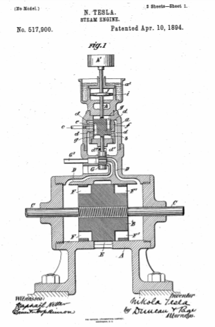
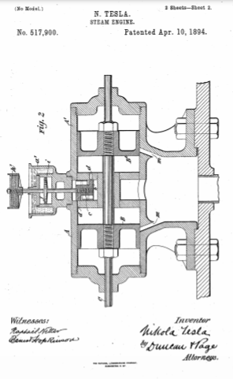

Descarga la patente original en esté enlace



Que se sepa que yo, NIKOLA TESLA , ciudadano de los Estados Unidos, residente en Nueva York, en el condado y en el estado de Nueva York, he inventado ciertas mejoras nuevas y útiles en motores de vapor, de las cuales la siguiente es una especificación, teniendo como referencia los dibujos que acompañan y forman parte de la misma.
Hasta ahora, los motores, operados por la aplicación de una fuerza como la tensión elástica del vapor o un gas a presión, han sido provistos de un volante, o algún sistema giratorio equivalente en su efecto y que posee una inercia mecánica relativamente grande, que fue confiado para mantener una velocidad uniforme. Sin embargo, he producido un motor que sin tales accesorios produce, bajo variaciones muy amplias de presión, carga y otras causas perturbadoras, un movimiento oscilante de período constante, y lo he mostrado y descrito en una solicitud presentada el 19 de agosto de 1893. , Número de serie 483,563. Es necesaria una descripción del principio de construcción y modo de funcionamiento de este dispositivo para comprender mi presente invención. Cuando un resorte que posee una inercia sensible se pone bajo tensión al estirarlo y luego liberarlo, realizará vibraciones que son isócronas y, en cuanto al período, que dependen principalmente de la rigidez del resorte y su propia inercia o la del movimiento. sistema del que forma parte inmediata. Se sabe que esto es cierto en todos los casos en los que la fuerza que tiende a llevar el resorte o el sistema móvil a una posición determinada es proporcional al desplazamiento. Al utilizar este principio con el propósito de producir un movimiento alternativo de un período constante, empleo la energía del vapor o gas bajo presión, actuando a través del mecanismo adecuado, para mantener en oscilación un pistón y conectar o hacer que actúe sobre dicho pistón un resorte, preferiblemente, un resorte neumático, bajo condiciones tales que regulen automáticamente el período de la vibración, de modo que los impulsos alternos del pistón impulsado por fuerza y las vibraciones naturales del resorte siempre correspondan en dirección y coincidan en el tiempo. En tal aparato es esencial que la inercia del sistema de movimiento y la rigidez del resorte deben tener ciertas relaciones definidas, es obvio que la cantidad practicable de trabajo realizado por el motor, cuando esto implica la superación de la inercia es una limitación a la aplicabilidad del motor. Por lo tanto, propongo, con el fin de asegurar todas las ventajas de las prestaciones de las que es capaz esta forma de motor, utilizarlo como medio para controlar la admisión y el escape de vapor o gas a presión en otros motores en general.
Los dibujos adjuntos ilustran dispositivos mediante los cuales se puede llevar a cabo la invención, siendo la Figura 1 una sección vertical central de un motor que incorpora mi invención, y la Figura 2 una vista similar de una modificación del mismo.
Con referencia a la figura 1, A designa un cilindro que contiene un pistón alternativo B fijado a un vástago C que se extiende a través de una o ambas culatas.
DD' son conductos de vapor que se comunican con el cilindro en o cerca de sus extremos y E es la cámara de escape o pasaje ubicado entre los puertos de vapor. El pistón B está provisto de los pasos habituales FF' que, mediante los movimientos del pistón, se ponen alternativamente en comunicación con la lumbrera de escape.
G designa una válvula de corredera que, en reciprocidad, admite el vapor o el gas por el que se acciona el motor, desde la tubería G' a través de los conductos DD' hasta los extremos del cilindro.
Se puede considerar que las partes así descritas ejemplifican cualquier cilindro, pistón y válvula de corredera con los puertos adecuados controlados por el mismo, pero la válvula de corredera en lugar de depender de su movimiento sobre el pistón B está conectada de cualquier manera de manera que sea recíproca por el vástago de un motor pequeño de período constante, construido sustancialmente de la siguiente manera: a es el cilindro en el que trabaja el pistón b. Un tubo de entrada c pasa a través del lateral del cilindro en la parte media del mismo. El cilindro sale a través de las lumbreras dd hacia una cámara d ' provista de una abertura d''. El pistón b está provisto de dos ranuras circunferencialese , f que se comunican a través de las aberturas g del mismo con las cámaras de los cilindros en lados opuestos del pistón. La construcción especial de este dispositivo puede variar considerablemente, pero es deseable que todas las lumbreras, y más particularmente, las lumbreras de escape sean más grandes de lo que se hace habitualmente, de modo que ninguna fuerza debida a la acción del vapor o aire comprimido en las cámaras tenderán a retardar o acelerar el movimiento del pistón en cualquier dirección. El pistón b está asegurado a un vástago h que se extiende a través de las culatas de cilindros, el extremo inferior lleva la válvula deslizante descrita anteriormente y el extremo superior tiene asegurado un émbolo j en un cilindro ifija al cilindro de una y de acuerdo con ella. El cilindro i no tiene orificios de ningún tipo y es hermético, excepto que pueden producirse fugas alrededor del vástago del pistón, lo que no requiere un ajuste muy ajustado y constituye una forma ordinaria de resorte neumático.
Si se admite vapor o un gas a presión a través de la lumbrera c a cualquier lado del pistón b , este último, como se entenderá, puede mantenerse en reciprocidad, y es libre de moverse, en el sentido de que su movimiento en cualquiera de los dos La dirección cesa sólo cuando la fuerza que tiende a impulsarlo y el momento que ha adquirido son contrarrestados por la presión creciente del vapor en el extremo del cilindro hacia el que se mueve, y como en su movimiento, el pistón se ha apagado en un En un punto dado, la presión que lo impulsó y estableció la presión que tiende a devolverlo, luego se impulsa en la dirección opuesta, y esta acción se continúa mientras se aplique la presión requerida. Los movimientos del pistón comprimen y enrarecen el aire en el cilindro.i en extremos opuestos del mismo alternativamente, y esto da como resultado el calentamiento del cilindro. Pero dado que una variación de la temperatura del aire en la cámara afectaría la rigidez del resorte neumático, mantengo la temperatura uniforme rodeando el cilindro i con una camisa a ' que está abierta al aire y llena de agua.
En un motor como el que se acaba de describir, la presión normal producirá una carrera de determinada longitud, que puede aumentarse o disminuirse de acuerdo con el aumento de presión por encima o la reducción de presión por debajo de lo normal y se tiene en cuenta al construir el motor. para una variación en la longitud del trazo. La tasa o período de movimiento alternativo del pistón, sin embargo, no depende más de la presión aplicada para impulsarlo, de lo que sería el período de oscilación de un péndulo mantenido permanentemente en vibración, sobre la fuerza que periódicamente lo impulsa, el efecto de siendo las variaciones de tal fuerza meramente para producir variaciones correspondientes en la longitud de carrera o amplitud de vibración, respectivamente. El período está determinado principalmente por la rigidez de la cámara de aire y la inercia del sistema en movimiento y, por lo tanto, puedo asegurar cualquier período de oscilación dentro de límites muy amplios al proporcionar adecuadamente estos factores, como al variar las dimensiones de la cámara de aire que puede ser equivalente a variar la rigidez del resorte, o ajustando el peso de las partes móviles. Esto último se logra fácilmente al prever la unión al vástago del pistón de uno o más pesos.h ' . Dado que el único trabajo que tiene que realizar el motor pequeño es el movimiento alternativo de la válvula unida al vástago del pistón, su carga es sustancialmente uniforme y su período debido a su construcción será constante. Cualquiera que sea la carga en el motor principal, por lo tanto, el vapor es admitido en el cilindro a intervalos definidos, y así se supera cualquier tendencia a un cambio del período de vibración en el motor principal.
El control del motor principal por el motor de período constante puede efectuarse de otra manera, de la cual la Fig. 2 servirá como ilustración. En este caso, el pistón del motor de control constituye la válvula de corredera del motor principal, de modo que este último puede considerarse accionado por el escape del primero. En la figura he mostrado dos cilindros AA ' colocados uno al lado del otro con un pistón B y B' en cada uno. El cilindro del motor de control está formado por o en la carcasa intermedia a los dos cilindros principales, pero en todos los demás aspectos esenciales, la construcción y el modo de funcionamiento del motor de control permanece como se describe en relación con la Fig.1. Sin embargo, los puertos de escape dd , constituyen los puertos de entrada de los cilindros AA' y el escape de este último se efectúa a través de las lumbreras m , m controladas por los pistones B y B ' respectivamente. El puerto de entrada para la admisión del vapor al motor de control es similar al de la Fig. 1 y está indicado por el círculo de puntos en el centro del pistón b
Un motor del tipo descrito posee muchas e importantes ventajas. Se asegura una regulación y uniformidad de acción mucho más perfectas, mientras que el motor es simple y su peso para una capacidad determinada se reduce considerablemente. El movimiento alternativo del pistón puede convertirse, mediante los mecanismos ordinarios, en movimiento giratorio o puede utilizarse y aplicarse de cualquier otra manera deseada, ya sea directa o indirectamente.
En otra aplicación de fecha par adjunta, he mostrado y descrito dos motores alternativos combinados de tal manera que el movimiento o el funcionamiento de uno depende y está controlado por el otro. En el presente caso, sin embargo, el motor de control no está diseñado ni adaptado para realizar otro trabajo que la regulación del período del otro, y además es un motor de carácter definido que tiene la capacidad de un movimiento oscilante de período constante.
Lo que digo es:
10 de Abril de 1894.. .
Nikola Tesla.